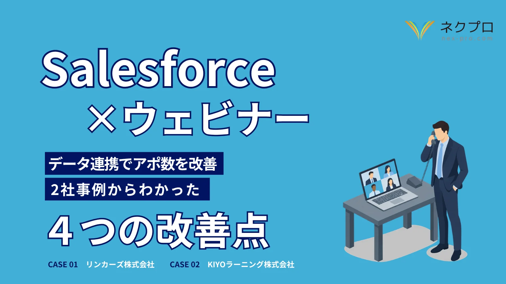
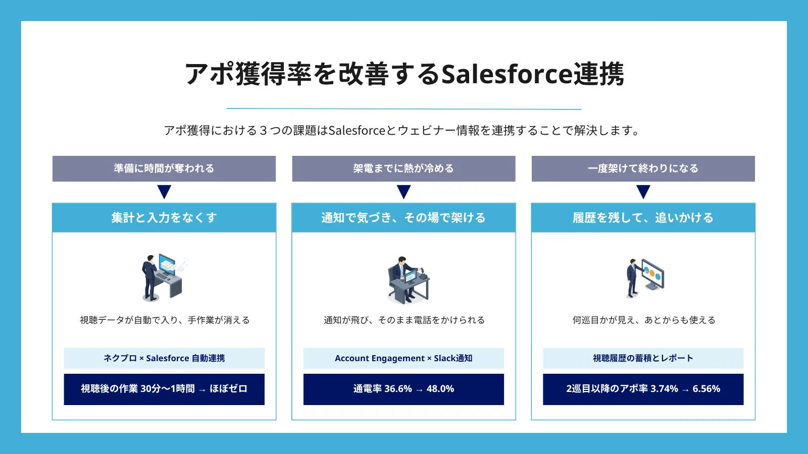
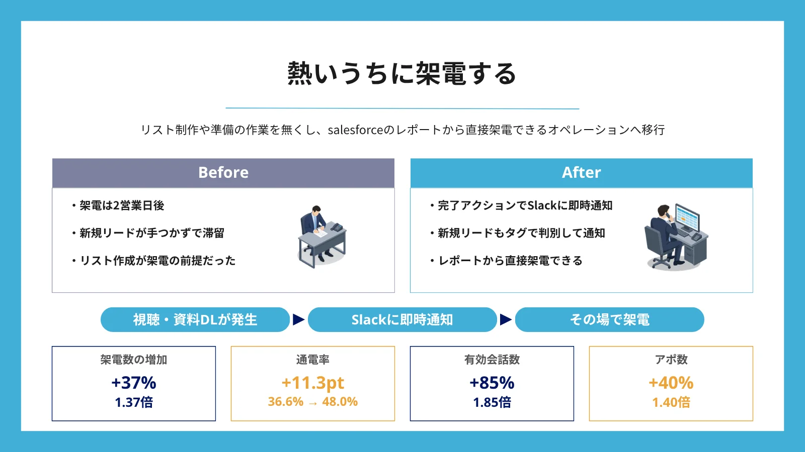
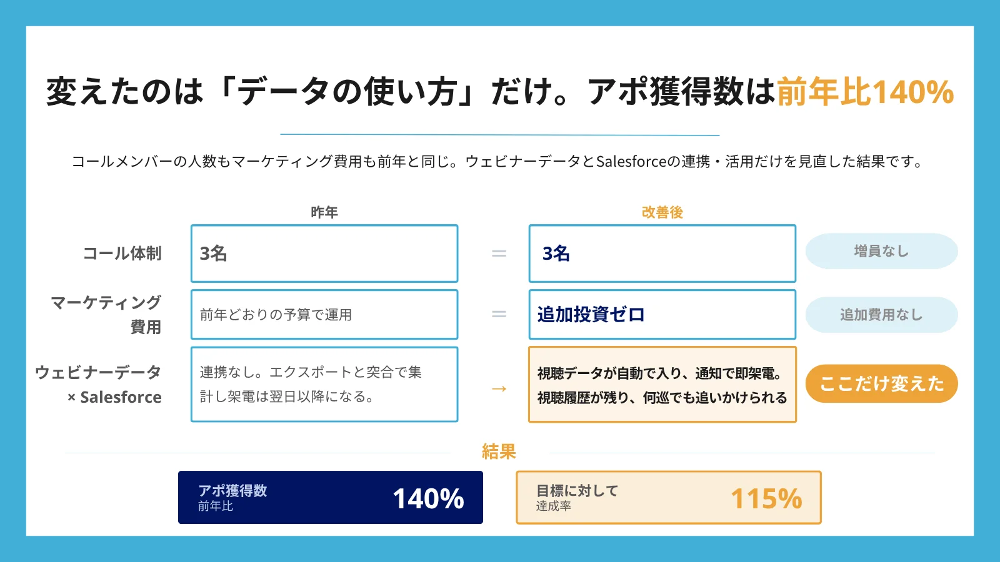
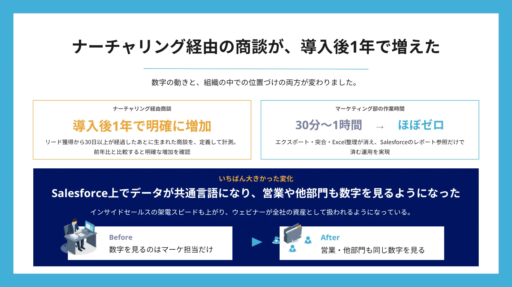

Salesforce×ウェビナー データ連携でアポ数を改善 2社事例からわかった4つの改善点

PREVIEW
本資料の中身
ウェビナー後のアポ獲得率を下げる課題の整理から、Salesforce連携による解決策、2社のBefore/After、着手のステップまでを全21ページに収録しています。




CONTENTS
目次
ウェビナー後のアポ獲得率を下げる3つの課題と、その解決方法
- 準備に時間が奪われる／架電までに熱が冷める／一度架けて終わりになる
- アポ獲得率の分岐点は、企画の質よりもデータを活かせているか
- 3つの課題を解決するSalesforce連携（集計と入力をなくす／通知で即架電／履歴を残して追いかける）
ウェビナー×Salesforce連携でアポ獲得数を改善した2社の事例
- リンカーズ株式会社 様：架電の時間を作る／熱いうちに架ける／一回で終わらせない
- KIYOラーニング株式会社 様：開催前に架ける／視聴直後に架ける／あとから架ける
- 各施策をBefore/Afterで図解
2社に共通していた4つの改善点と、着手のステップ
- 直したのは企画ではなく、データの活用
- アポ獲得率改善の4ステップ（データ連携／自動化／即架電の体制／後追いのルール化）
- Salesforceとネクプロの連携事例（申込の受付から即架電まで）
HIGHLIGHTS
本書の見どころ
アポ獲得数 前年比140%
コール体制3名・マーケティング費用も前年と同じまま
変えたのはウェビナーデータとSalesforceの連携・活用だけ。目標に対する達成率は115%になりました（リンカーズ株式会社 様）
通電率 36.6% → 48.0%
視聴や資料DLが発生した瞬間に通知し、その場で架電
リストを作らず、Salesforceのレポートから直接架電する運用に移行。有効会話数は1.85倍、アポ数は1.40倍になりました（リンカーズ株式会社 様）
アポ率 3.74% → 6.56%
2巡目以降の後追いを「気合い」ではなく「ルールと可視化」で回す
時間帯を変えて3巡までをルール化し、テンプレートを統一して何巡目かが見える状態にしました（リンカーズ株式会社 様）
集計作業 → ほぼゼロ
視聴後に30分〜1時間かかっていたエクスポートと突合、Excel整理をなくす
視聴データがそのままSalesforceのレポートに反映され、視聴直後の熱いうちに架電できるようになりました（KIYOラーニング株式会社 様）
ナーチャリング経由の商談が増加
視聴履歴を蓄積し、ウェビナーを商談の種として使い続ける
申込通知で開催前から架電し、過去に何を見たかを手がかりにハウスリストへ再架電。Salesforce上のデータが共通言語になり、営業や他部門も同じ数字を見るようになりました（KIYOラーニング株式会社 様）
FOR
こんな方におすすめです
ウェビナーを開催しているのに、アポ獲得数が伸び悩んでいる方へ
企画を変える前に、集めたウェビナーデータをどう営業の手元に届けるか。本書は、Salesforceとの連携でアポ獲得数を改善した2社の進め方を実例ベースで解説しています。
- ウェビナーのたびに、リスト整備や視聴データの集計に時間を取られている
- 架電がウェビナーの2〜3営業日後になり、ホットリードが手つかずで滞留している
- 一度架けて繋がらなければ、そこで終わりになっている
- 視聴データを営業に渡せておらず、ウェビナーが単発の施策で終わっている
- Salesforceを使っているが、ウェビナーのデータとはつながっていない
発行：株式会社ネクプロ（〒101-0054 東京都千代田区神田錦町3丁目15-6 名鉄不動産竹橋ビル7F ／ nex-pro.com）
ネクプロは、中小企業から大手企業まで累計400社以上に導入実績のあるウェビナー・動画配信ツールです。